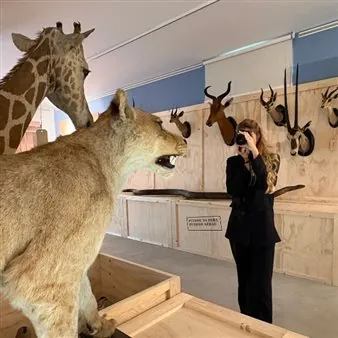

da ven 27 nov a ven 18 dic
Scatta la Natura - L'ultimo percorso di "Connessioni che rigenerano" torna in FabLab!
Nuovi appuntamenti al FabLab, lo spazio che il Museo Friulano di Storia Naturale ha dedicato alla creatività digitale (e non solo). Dopo il primo progetto dedicato alle T-shirt da ri-generare, il ciclo degli incontri creativi del FabLab continua con "Scatta la Natura". Cinque…
 Indicazioni
Indicazioni
- Costi e prenotazioni
- Costo non indicato · Prenotazione non indicata
- Programma
- Programma da verificare. Apri la fonte ufficiale per orari e possibili aggiornamenti.
- In caso di maltempo
- Nessuna indicazione specifica pubblicata.
- Note
- Acquisito automaticamente dalla fonte.
L’EVENTO
Descrizione completa
Nuovi appuntamenti al FabLab, lo spazio che il Museo Friulano di Storia Naturale ha dedicato alla creatività digitale (e non solo). Dopo il primo progetto dedicato alle T-shirt da ri-generare, il ciclo degli incontri creativi del FabLab continua con "Scatta la Natura". Cinque incontri per avvicinarsi alla fotografia come linguaggio espressivo e strumento di documentazione, sviluppando curiosità, creatività e spirito di osservazione.
La parola chiave è OSSERVARE : prima di scattare, impara a guardare! Cercare un dettaglio, cambiare prospettiva, giocare con la luce e scoprire che uno stesso soggetto può essere raccontato in tanti modi diversi.
A guidare il percorso sarà Luca Laurerati , fotografo e insegnante di fotografia. Da molti anni collabora con importanti istituzioni pubbliche e private, occupandosi di fotografia del patrimonio artistico e museale, dell'architettura e del paesaggio.
Un momento speciale sarà dedicato alla mostra “Trofei d’Oltremare. Una storia da riscrivere” del nostro Museo: i reperti esposti diventeranno il soggetto dei vostri scatti, un'occasione per sperimentare quanto scoperto durante il percorso.
Smartphone, reflex e macchine fotografiche: ogni strumento è benvenuto! Non servono esperienze o conoscenze pregresse. Il laboratorio è aperto agli adulti e alle ragazze e ai ragazzi dalle scuole medie in su.
Il risultato? Un portfolio fotografico collettivo, con gli scatti dei partecipanti raccolti in uno spazio Google Drive condiviso!
I 5 incontri:
Venerdì, 27 novembre 2026, dalle 16:00 alle 17:30
Venerdì, 4 dicembre 2026, dalle 16:00 alle 17:30
Venerdì, 11 dicembre 2026, dalle 16:00 alle 17:30
Sabato, 12 dicembre 2026, dalle 11:00 alle 12:30
Venerdì, 18 dicembre 2026, dalle 16:00 alle 17:30
Pronti a guardare il mondo con occhi nuovi e a raccontarlo attraverso le vostre fotografie? Il Museo Friulano di Storia Naturale ci aspetta.
Tutte le attività si ispirano all'Agenda 2030.
Goal 11 - Città e comunità sostenibili
Tutti i laboratori sono gratuiti!
Prenotazione obbligatoria entro ogni venerdì alle 12.00 : info.mfsn@comune.udine.it
IL PROGRAMMA
Programma e orari
Appuntamenti raccolti dalle fonti elencate. Dove manca un orario, non è ancora disponibile in questa scheda.
Programma pubblicato
- Dal 2026-11-27 al 2026-12-18
INFORMAZIONI UTILI
Prima di partire
- Controllare la fonte prima di partire.
ORGANIZZAZIONE